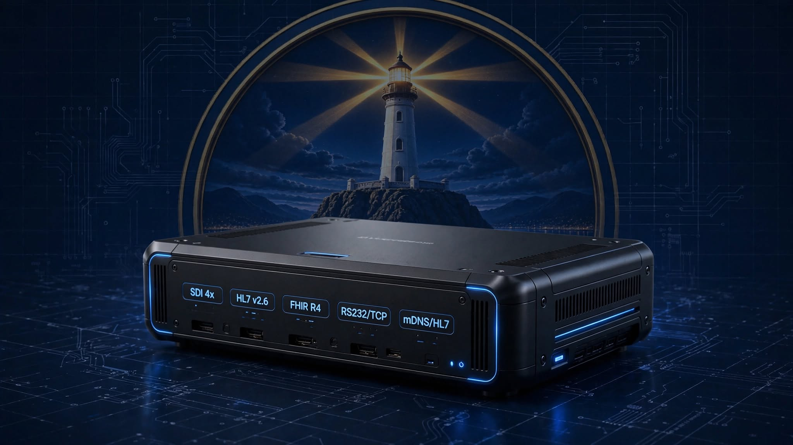

0303 OPERATING THEATRE REAL-TIME INTEGRATION SYSTEM
OTRIS DOES NOT BUILD THE OPERATING THEATRE
OTRIS is a medical technology integration platform designed to connect existing medical devices, clinical data, and hospital systems through a governed integration architecture.